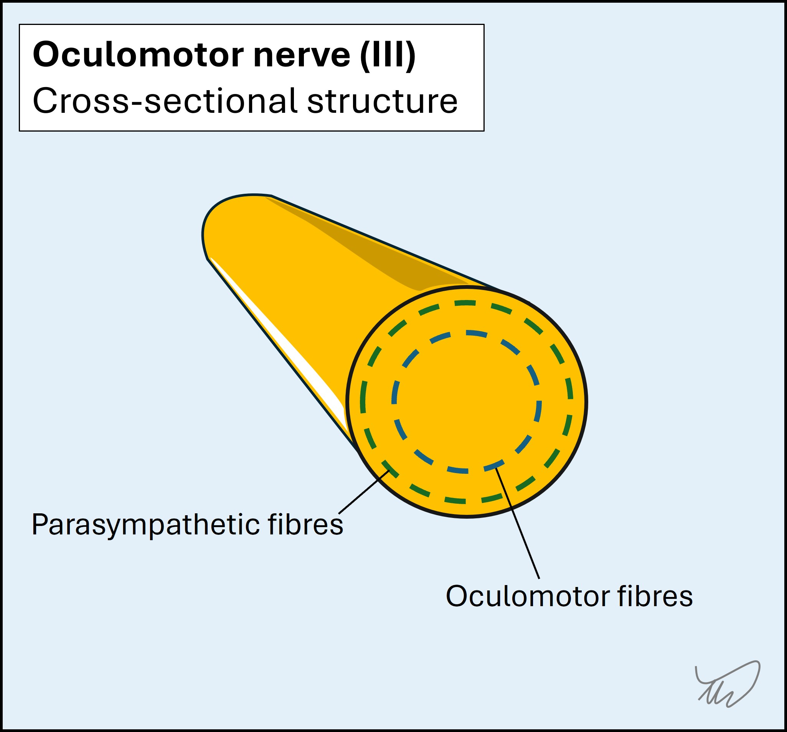
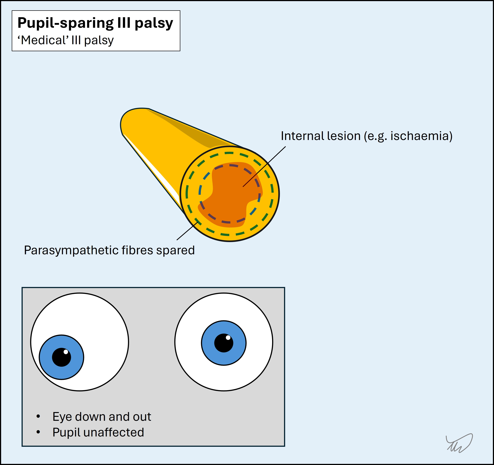
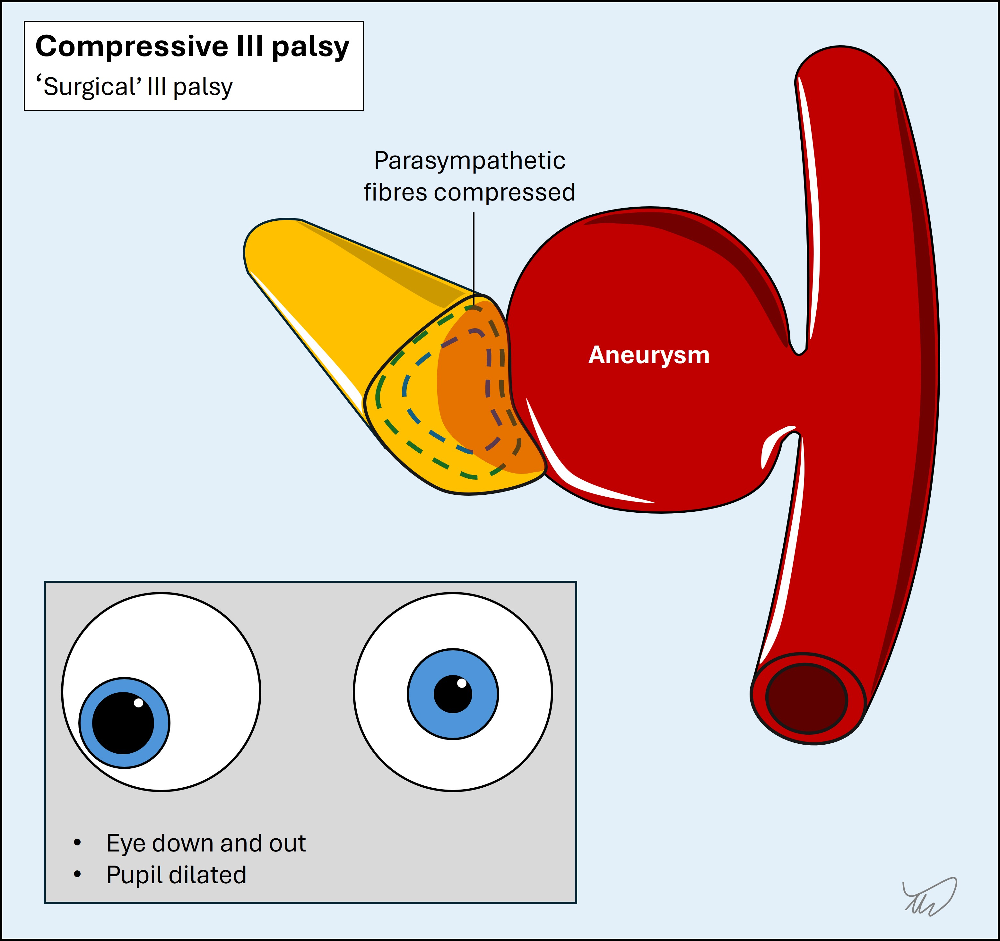
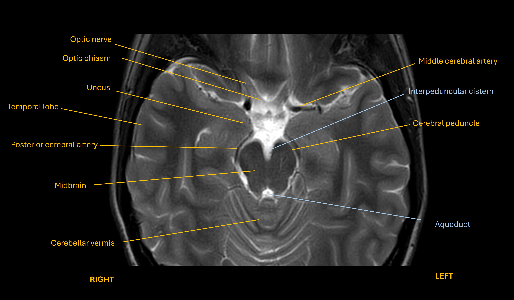
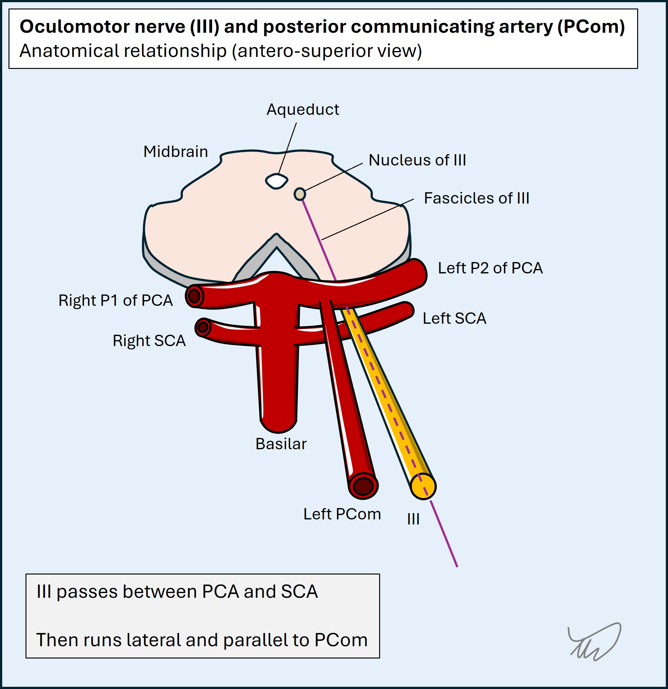
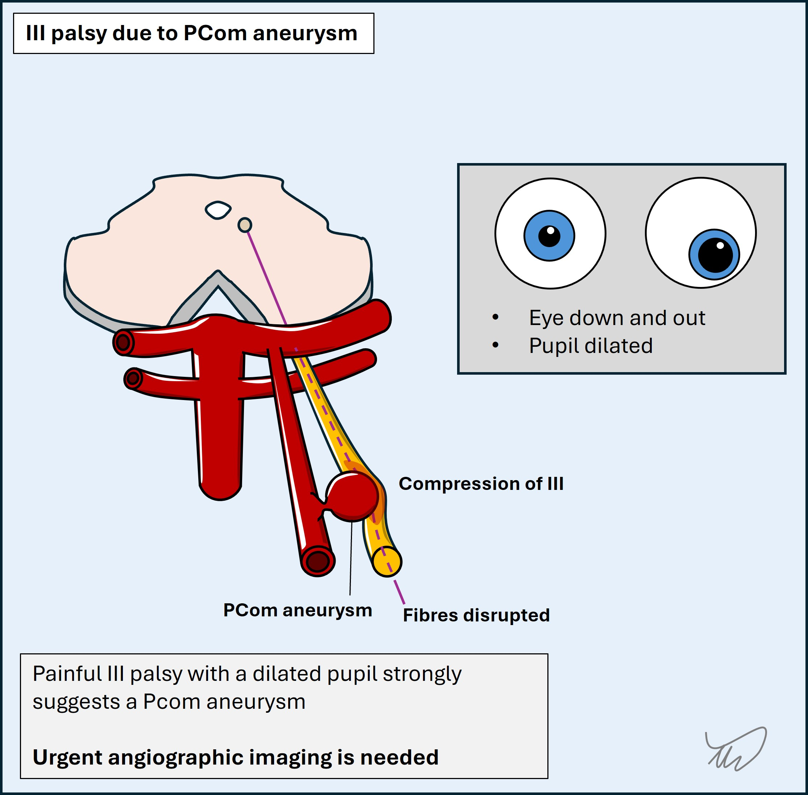
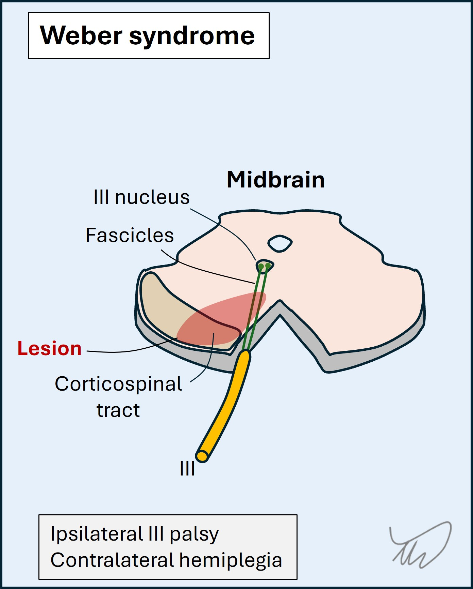

Case 14 - coma and dilated pupil
Where is the lesion?
This is a serious neurological emergency – the patient is in a coma and has a mixture of lateralising neurological signs. The priorities are stabilisation and rapid diagnosis.
Coma is a special situation in neurology from the perspective of the assessment. We can’t take a history from the patient so rely on collateral information, and the patient cannot comply with instructions so we rely on limited, primitive tests. But we can learn a great deal from these and should be able to do them rapidly, to minimise any delays in diagnosis and treatment.
It may seem like a lot is written below, but a neurologist should be able to quickly elicit and interpret these features – there isn’t time for a forensic neurological examination. We have the luxury of time and space to discuss in detail here – but in the heat of the moment, the thinking below needs to happen very quickly.
ComaFirstly, clearly there is a brain or brainstem problem - no other lesion site would produce coma, even if others might also produce some of the other eye or limb signs. There are many causes of coma - but the other signs present also imply structural pathology is likely here, and it must be affecting the deep structures involved in consciousness.
Motor features in limbsShe also has evidence of reduced tone in the left side, and she isn’t spontaneously moving the left side at all. This is concerning for new-onset paralysis. Hyperacute weakness due to upper motor neuron (UMN) lesions does not display the other features that indicate UMN disease such as hyperreflexia, spasticity – these take weeks-months to emerge. However, we don’t need them - there is no lower motor neuron (LMN) cause of hemiplegia, which is what we think this is. This is harder in paraplegia and tetraplegia where the differential may be between severe neuropathy versus spinal disease and we can't tell which is the caused via tone and reflexes in the first few days.
Pupil dilatationShe also has pupil dilatation on the right. This is concerning in the context of coma and there is a reason we check this as a component of ‘neurological observations’, for example after head trauma.
The dilated pupil raises concern for an oculomotor (III) nerve palsy - although this is not the only cause. Other features of a III palsy may be hard to show here. The ‘full-house’ complete III palsy includes an eye which is ‘down-and-out’, pulled down by the trochlear (IV) nerve and out by the abducens (VI), and is completely paralysed in the muscles controlled by nerve III (ophthalmoplegia). However, milder forms may feature partial exotropia (a divergent squint) - which looks to be the case here. There may be partial ability to move the eye in some directions controlled by nerve III (i.e. incomplete paralysis, or ophthalmoparesis), but she is unconscious so cannot follow commands. Ptosis is another clue - but again, with unconsciousness her eyes are shut.
Of note - some patients have a chronic dilated pupil, for example following prior eye injuries. This is important to be aware of, as otherwise it can be misleading and suggest a III palsy. However, in this situation we don’t have time to read all the prior records for reference to this, so must assume it is new – and in the context of the presentation it is very likely to be a III palsy.
The presence of a III palsy with pupillary involvement is very concerning here. The parasympathetic fibres which constrict the pupil run around the outer parts of the nerve:

As a result, compression tends to affect these early, leading to pupil dilatation – in contrast to other types of III palsy where there is intrinsic disease (e.g. microvascular ischaemia) which often spares the pupillary fibres while causing ophthalmoplegia. In any III palsy, the presence of pupillary dilatation is an important observation because it suggests compressive pathology is likely. As a crude way of dividing these, III palsy with pupil involvement is often referred to as a 'surgical' III palsy, and pupil-sparing III palsy as a 'medical' III palsy. It's not so simple as not every compressive cause is treated surgically - but as a summary term it helps us think about causes.

There are many causes of a compressive III palsy, but the chief one in anyone presenting with unconsciousness is herniation of the temporal lobe uncus (see image below) under the tentorium, compressing III. This happens due to anything that causes severe mass effect in the ipsilateral brain above this, for example haemorrhage, massive ischaemic stroke, tumour or oedema due to hypoxia.

In the context this is a very concerning sign, and a rapidly expanding mass lesion in the right hemisphere is a major concern.
One other important consideration for a pupil-involving III palsy is compression of the nerve by an adjacent aneurysm, particularly in the posterior communicating artery (PCom) - which runs parallel and medial to III in the subarachnoid space as part of the circle of Willis. This can sometimes present with a new III palsy and headache – but equally may present with coma due to aneurysmal rupture and subarachnoid haemorrhage (SAH), so is a concern here too. Hemiplegia would be less common.


The nucleus of III is in the midbrain and the fascicles run anteriorly through it – the nerve then exits between the peduncles. Various syndromes exist due to focal midbrain lesions that feature a combination of III palsy and additional signs in the limbs - for example Weber syndrome with contralateral hemiplegia (the corticospinal tract is affected above the pyramidal decussation in the caudal medulla).

It’s not impossible that the problem is in the midbrain, but this seems less likely, unless the lesion also involves consciousness centres higher up (including in the thalamus). Furthermore the types of infarct involved in these focal, lateralised midbrain syndromes tend to involve small perforating arteries (for example the paramedian vessels) – so wouldn’t tend to involve other structures outwith the small affected zone.
Basilar tip occlusions can also produce anisocoria with coma and paralysis, so this is another consideration here.
SummaryThere is a brain lesion of some kind, and the combination of coma, right exotropia with pupil dilatation suspicious of III palsy, and likely left hemiparesis, raise concern for a large right hemispheric lesion causing mass effect and uncal herniation. A ruptured aneurysm is also a possibility. Less likely possibilities are brainstem lesions producing these signs.
What is the lesion?